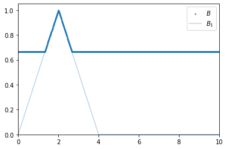
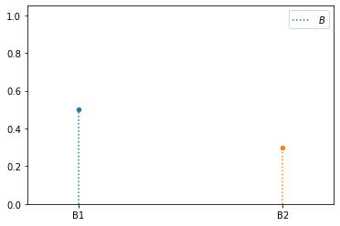

Variable¶
- class floulib.Variable(*args)¶
Bases:
PlotThis class contains methods to define and use variables to be used with rules.
- __init__(*args)¶
Constructor
- Parameters:
- Raises:
Exception – Raised if no argument is provided.
TypeError – Raised if one argument is provided but is not an instance of numpy.ndarray | Terms | numbers.Number | callable
Exception – Raised if several arguments are provided but are not of the same type.
TypeError – Raised if several arguments are provided but are not instances of Singleton or Term.
- Return type:
None.
Example
Numeric variables
>>> from floulib import Term, Triangle, Rule, Variable >>> import numpy as np >>> A1 = Term('A1', Triangle(0, 5, 10, label = '$A_1$')) >>> B1 = Term('B1', Triangle(0, 2, 4, label = '$B_1$')) >>> v1 = Variable(np.linspace(0,15, 1000)) >>> v2 = Variable(np.linspace(0, 10, 1000)) >>> R = Rule().If(v1.Is(A1)).Then(v2.Is(B1)) >>> A = Triangle(6, 8, 9).label('$A$') >>> B = R.inference(v1.Is(A)).label('$B$') >>> B.plot().add_plot(B1, alpha = 0.3)
Symbolic variables
>>> from floulib import Discrete, Term, Terms, Triangle, Rule, Rules, Variable >>> import numpy as np >>> A1 = Term('A1', Triangle(0, 5, 10, label = '$A_1$')) >>> A2 = Term('A2', Triangle(5, 10, 15, label = '$A_2$')) >>> B1 = Term('B1', Triangle(0, 2, 4, label = '$B_1$')) >>> B2 = Term('B2', Triangle(2, 4, 6, label = '$B_2$')) >>> v1 = Variable(A1, A2) # defined with instances of Term >>> T2 = Terms(B1,B2) >>> v2 = Variable(T2) # defined with one instance of Terms >>> R = Rules( Rule().If(v1.Is(A1)).Then(v2.Is(B2)), Rule().If(v1.Is(A2)).Then(v2.Is(B1)) ) >>> A = Discrete(('A1', 0.3), ('A2', 0.5)) >>> B = R.inference(v1.Is(A)).label('$B$') >>> B.plot()
- Is(_object=None)¶
This method is used to set the “value” of a variable used in the definition of rules and in the inference.
- Parameters:
_object (Any | Discrete | Multilinear | Term | numbers.Number, optional) – The “value” to set. The default is None.
- Raises:
TypeError – Raised if the parameter is not an instance of
Any,Discrete,Multilinear, numbers.Number orTerm.- Returns:
The variable object.
- Return type:
Example
See
Variable.__init__().
- Certainty(level)¶
Adds a certainty level to a variable (see
floulib.Discrete.Certainty(),floulib.Multilinear.Certainty(),floulib.Term.Certainty()depending of the type of the object associated with the variable).- Parameters:
level (float) – The certainty level.
- Raises:
TypeError – Raised if the object associated with the variable is not an instance of
Discrete,MultilinearorTerm.- Returns:
Variable with a certainty level.
- Return type:
- Uncertainty(level)¶
Adds an uncertainty level to a variable (see
floulib.Discrete.Uncertainty(),floulib.Multilinear.Uncertainty(),floulib.Term.Uncertainty()depending of the type of the object associated with the variable).- Parameters:
level (float) – The uncertainty level.
- Raises:
TypeError – Raised if the object associated with the variable is not an instance of
Discrete,MultilinearorTerm.- Returns:
Variable with an uncertainty level.
- Return type: